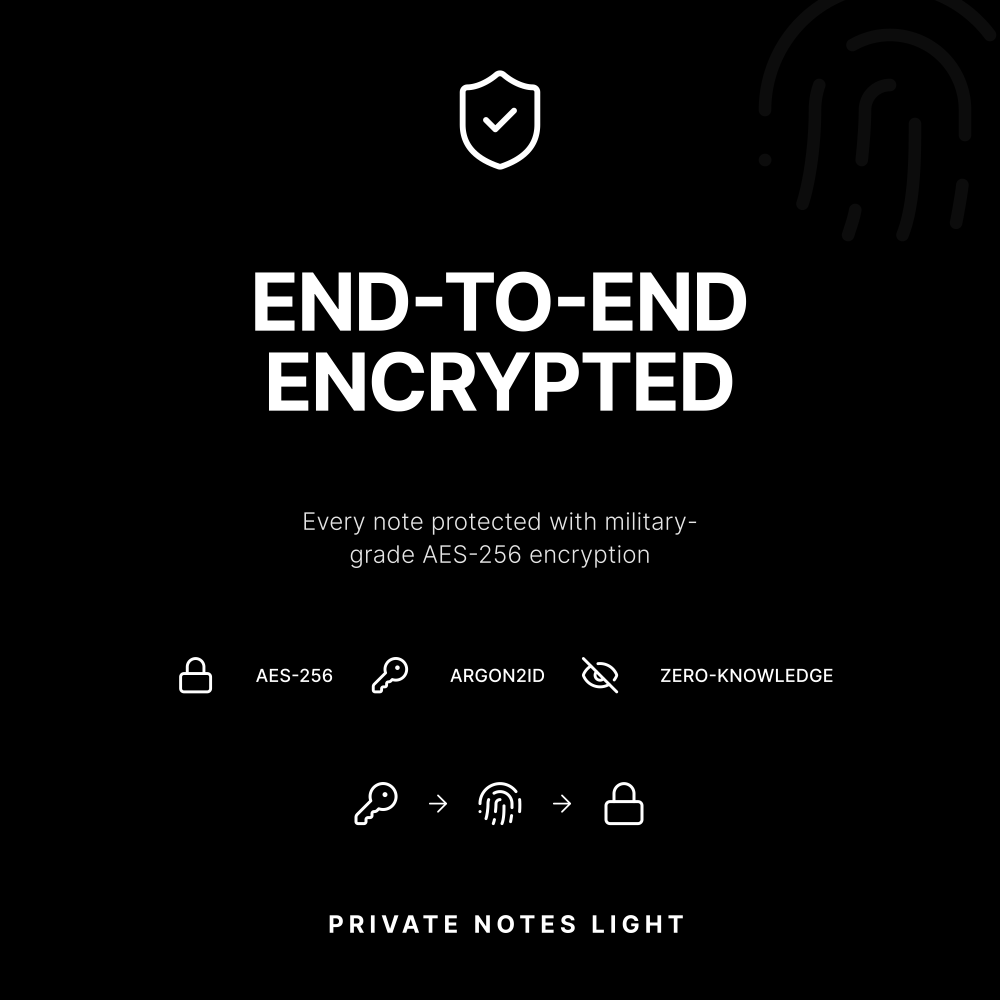

AES-256 encryption
Notes are encrypted locally using a master key protected by Argon2id key derivation.
A local-first, end-to-end encrypted notes app for Android and iOS. Notes are encrypted with AES-256 before they are saved to your device. No servers, no accounts, no cloud sync.

Credit: Cosmos
The master password is never stored. A password-derived key protects the app's master key, and notes are encrypted and decrypted locally on the device.
Notes are encrypted locally using a master key protected by Argon2id key derivation.
No internet connection or account is required. Data stays on the device.
Export encrypted notes to JSON and restore them on another device.
The app clears the master key from memory when it loses focus.
